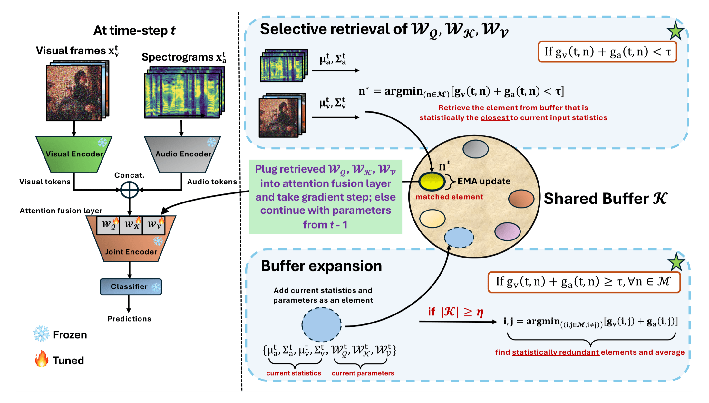
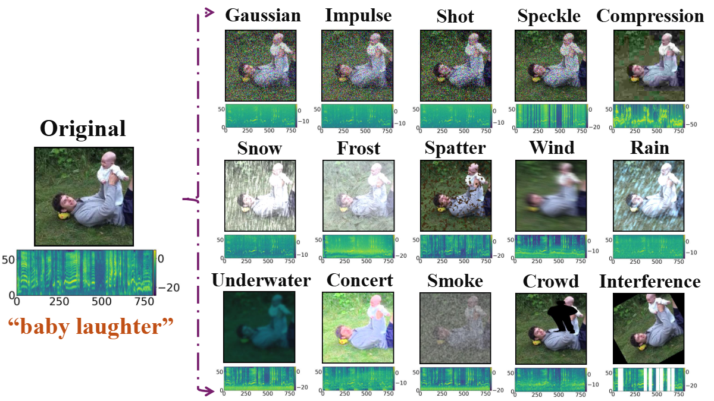
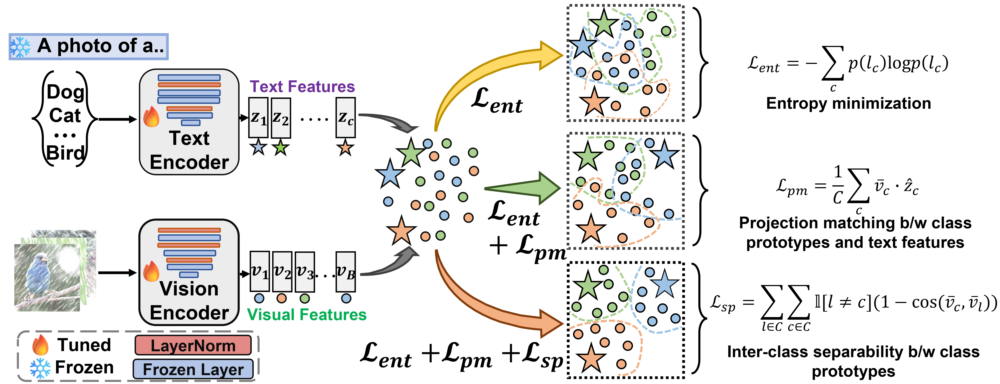
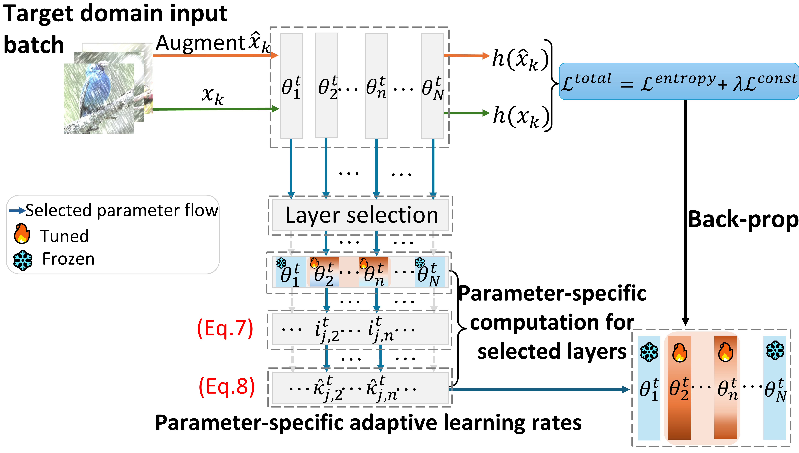

Received an ECCV 2026 travel award; will also review for AAAI 2027.
Open to research conversations & Collaborations. Feel free to reach out!
Computer Vision / Multimodal AI / Physical AI

Sarthak Kumar Maharana
CS PhD Candidate advised by Dr. Yunhui Guo
The University of Texas at Dallas
I build adaptive, efficient, and robust AI systems that keep learning when the world changes. My work spans continual learning, multimodal perception, and real-time motion planning and reasoning for autonomous driving.
01 / Now & earlier
Signals & Updates
Our continual test-time adaptation survey was accepted to TMLR.
AVReCAP was accepted to ECCV 2026.
I'll be joining NEC Laboratories America to work on real-time reasoning and planning for autonomous driving.
Returned to reviewing for NeurIPS 2026.
Variational Diffusion Unlearning was accepted to TMLR.
AVROBUSTBENCH was accepted to NeurIPS Datasets & Benchmarks.
Received a travel grant from the ICCV community!
BATCLIP was accepted to ICCV 2025.
We will organize the 1st Workshop on Multimodal Continual Learning at ICCV 2025.
Old news 2024 — 2026
Passed my qualifying examination and became a PhD candidate.
We will co-organize the 2nd Workshop on Test-Time Adaptation at ICML 2025.
I'll join Dolby Laboratories as a PhD Research Intern for Summer 2025.
PALM was accepted to AAAI 2025 as an oral presentation.
Served as a reviewer for CVPR 2025.
Variational Diffusion Unlearning was accepted to the NeurIPS SafeGenAI Workshop.
Our submodular optimization work for active 3D object detection was accepted to NeurIPS 2024.
Served as a reviewer for ICLR 2025.
Our work on DNN watermarking was accepted to ECCV 2024.
02 / Research direction
Learning beyond
the static world.
My research asks how intelligent systems can perceive, adapt, and make reliable decisions under continual changes BUT without expensive retraining or catastrophic forgetting.
R / 01
Adaptive intelligence
Models that learn during deployment while preserving what they already know, even across long and unpredictable data streams.
R / 02
Robust multimodal perception
Audio-visual and vision-language systems that remain dependable under corruption, distribution shift, and missing modalities.
R / 03
Physical AI
Real-time perception, reasoning, and motion planning for autonomous driving models operating in open-ended, safety-critical environments.
03 / Selected work
Research with
real-world friction.
Selected work across adaptive learning and multimodal robustness. My full publication record is available on Google Scholar.
ECCV 2026

NeurIPS 2025

ICCV 2025

AAAI 2025 · Oral

Other publications2021 — 2026
2026TMLRContinual Test-Time Adaptation in Computer Vision: Methods, Benchmarks, and Future Directions
2026TMLRVariational Diffusion Unlearning
2025PreprintSELECT: A Submodular Approach for Active LiDAR Semantic Segmentation
2024ECCVNot Just Change the Labels, Learn the Features: Watermarking DNNs with Multi-View Data
2024ICASSP SASB WorkshopAcoustic-to-Articulatory Inversion for Dysarthric Speech with Self-Supervised Representations
04 / Experience
From ideas
to systems.
I work across academic and industrial research, connecting fundamental questions.
NEC Laboratories America, Inc.
Research Scientist Intern
Real-time reasoning and closed-loop trajectory planning for autonomous driving.
Dolby Laboratories, Inc.
PhD Research Intern
Robust audio-visual learning in continual learning settings.
The University of Texas at Dallas
PhD Candidate · Computer Science
Advised by Dr. Yunhui Guo in the Data Efficient Intelligent Learning Lab.
Let’s build what
adapts next.
I’m always glad to discuss research collaborations and emerging ideas. I have a knack for finding interesting problems or digging into the teeny-tiny details of a paper.
Start a conversation ↗